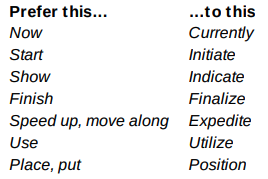
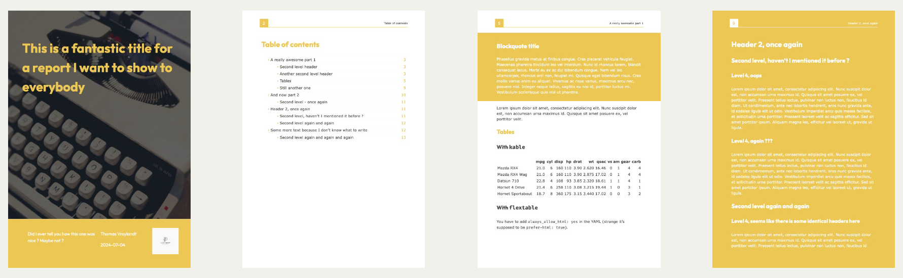
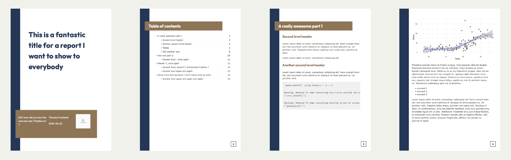
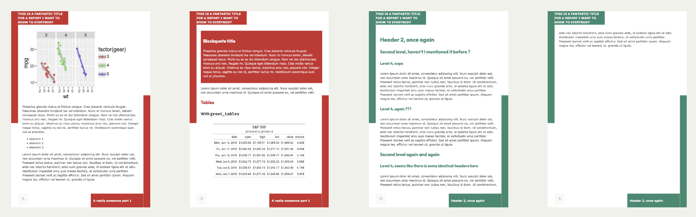
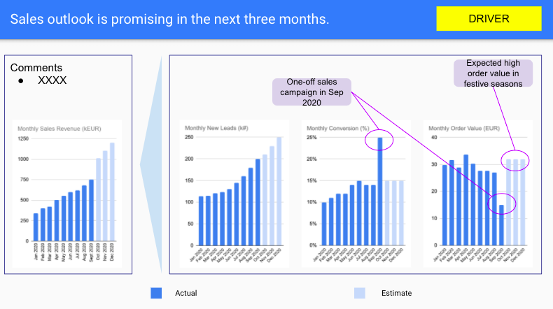
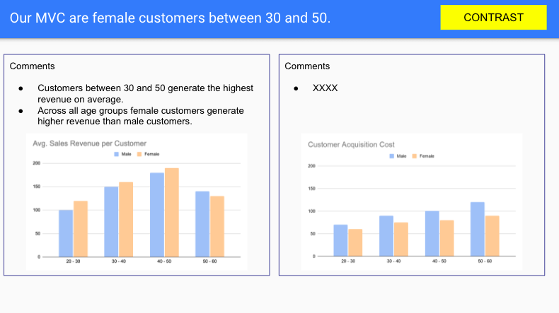
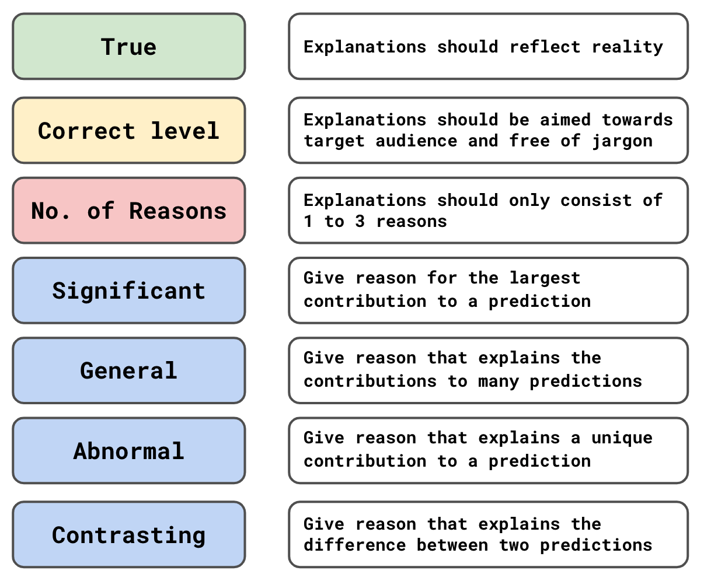
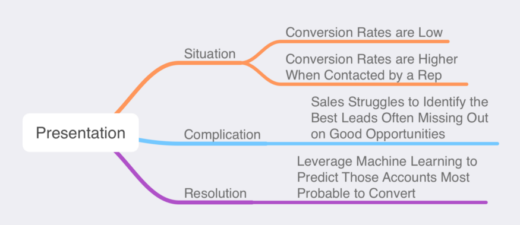
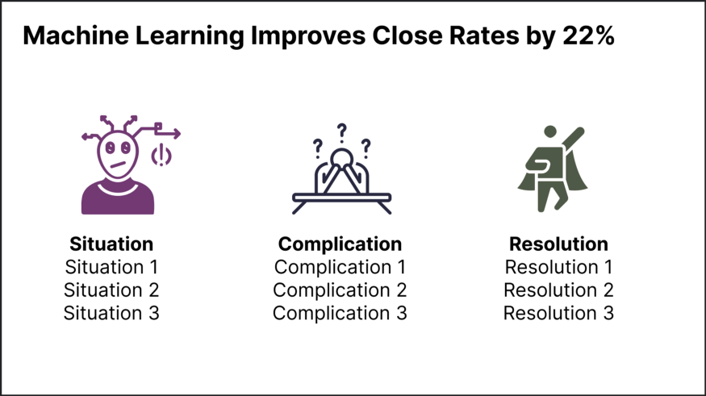

Reports
Misc
- Packages
- {narrator} - Creates a text summarization of descriptive statistics. The outputted text can be enhanced with ChatGPT. Available in both R and Python.
- Chicago manual of style for citations
- Reread after 3 days to make sure it makes sense before publishing
- Dancho does his labs on Wed afternoons, so maybe that’s a good time to release articles.
- Print out article and highlight topic sentences
- Does each topic sentence describe the paragraph. Do all the other sentences in the paragraph support the topic sentence.
- Do the topic sentences produce a good outline about the subject you wanted to discuss. Do they follow a logical data storytelling sequence.
- Primary interests of business people: business question, budget, whether research is conclusive or not conclusive, and value the research or product provides.
- Keep color schemes for categoricals, metrics, etc.
- If you used a color palette for male/female in an earlier section/slide, keep that same palette throughout.
- Keep date and other variable formats consistent throughout
- No more than 3 dimensions on a chart
- Pick the chart, graph or table that best fits with the paragraph and move on to the next point. Don’t use multiple charts that show the same thing.
- Never introduce something into the conclusion that was not analyzed or discussed earlier in the report.
- Do not include more information than is necessary to support you report objectives
- Phrases for communicating uncertainty
- ’Here’s something we expect to see a lot,”
- “Here’s something we expect to see sometimes”
- “Here’s something that could happen on rare occasions, but which is worth considering because of the high stakes.”
- Stakeholders tend to trust data that supports their views and question data that doesn’t.
- You need to be ready to explain your methodology clearly and back up your findings with robust evidence.
- When facing skepticism, transparency is your ally. Show your work, explain your steps, and highlight any potential limitations.
- This approach not only builds trust but also educates your stakeholders, helping them understand the complexities of Data Analytics.
Concepts
- What is the problem we are solving
- e.g. Why are we losing so many customers?
- Understand the kind of story you want to tell -
- A one-time story: What caused the last month’s shortage?
- Updated, ongoing story: Weekly rise and fall of sales, fraud detection
- Know your audience
- What knowledge your audience brings to the story. What kind of preconceptions does the audience have.
- Include the critical elements of a traditional story structure
- Point of View: Someone has to ask the question that’s answered with data.
- Empathy: Need to have human protagonist who’s solving the problem.
- An Antagonist: Confusion or misunderstanding that makes achievement of the solution difficult.
- An Explicit Narrative: This happened, then this happened, and then…
- Develop the Right Hook
- What helps grab the attention of the managers? e.g. newspaper lead opening, startling statistics, teaser
- A picture is priceless
- People like visuals but good ones are really difficult to create
- What’s your point?
- Resolve and close what does your story advise to do? e.g A Call to Action
- Iterate
- Some stories need to be retold continuously when new data arrives, good stories live on
General Guidelines
- Know your audience Don’t use technical terms when talking to non-technical people.
- Fast-track the conversation to the technical stuff when talking to fellow data scientists.
- The more senior the person you’re talking to, the more to the point your message has to be.
- Small talk with long-term clients is always essential to maintain a strong relationship.
- The CEO (and most non-technical stakeholders) only wants to know the result of your analysis and what it means for their company. So, always lead with the solution and the impact.
- Simplified
- Intent: This is your overall goal for the project, the reason you are doing the analysis and should signal how you expect the analysis to contribute to decision-making.
- Objectives: The objectives are the specific steps you are taking or have taken to achieve your above goal. These should likely form the report’s table of contents.
- Impact: The result of your analysis has to be usable — it must offer solutions to the problems that led to the analysis, to impact business actions. Any information which won’t trigger action, no matter how small, is useless.
- What is the business question?
- Why is it important?
- Does your model enable us to better select our target audience?
- How much better are we using your model?
- What will the expected response on our campaign be?
- What is the financial impact of using your model?
- What is the data science question?
- What is the data science answer?
- What is the business answer?
- Show a general form of the equation, definition of terms, before explaining how to fill it with values of particular to your problem
- How would you recommend your model/results be used?
- Be direct. Communicate your thoughts in a forthright manner, otherwise the reader may begin to tune out.
- Start with an outline
- State your objective
- List out your main points
- Number and underline your main points to guide the reader
- End with a summary.
- Open with short paragraphs and short sentences
- Use short words. The goal is to reduce friction.
 - Use adjectives and adverbs for precision, not exclamation points.
- Cut lazy words like very, great, awfully, and basically. These do nothing for you.
- Use down-to-earth language and avoid jargon. Like explaining to a 6th grader
- Don’t use generalities (e.g. “Our campaign was a great success and we came in under budget”).
- Be specific (e.g. “We increased click-through rates by 21% while spending 19% less than expected.”)
- Take the time to build down what you have to say. Then, express it confidently in simple, declarative sentences.
- Especially in memos and emails, put your declaration in the subject line or as the first line
Narrative Structures
- Developing a narrative when presenting results is imperative in order for recommendations to gain traction with stakeholders
- Budget at least 50% of time in the project plan for insight generation, and structuring a narrative (seems a bit large)
- With each iteration (potentially dozens) of improving your presentation, you are looking to address any insight gaps, and improve the effectiveness in conveying the insight and recommendations
- Anticipate potential follow up questions they might ask and preemptively address them
- Eliminate any distractions to the key message such as ambiguous statements, or erroneous facts that can derail the presentation
- If possible find someone with tenure in the organization, or has expertise in the business area you are analyzing to lend a critical eye to your presentation.
- Also may provide insight on how best to win the trust of key decision makers and potential areas that can derail the effort
- Example 1
- Executive Summary
- Brief Description of Problem
- Approach Taken
- Models Used
- Results
- Conclusion
- Recommendations
- Describe the status quo
- Maybe describe what each proceeding section will entail
- What’sthe problem that needs fixing or improved upon
- Proposed solution
- Issues that arose during process, maybe a new path discovered not previously thought of
- Solution
- Description of data
- Recommendations or next steps
- The stakeholder must understand the expected outcome, and the levers that need to be pulled to achieve that outcome.
- An effective analysis owner will take on the responsibility for the stakeholder’s understanding, through communicating both specific predictions and the supporting evidence in a consumable way.
- Executive Summary
- Example 2
- Executive Summary
- Brief Description of problem
- Approach Taken
- Models Used
- Results
- Conclusion
- Recommendations
- Introduction
- Question
- Background
- Why Important
- Describe Structure of the Report
- Maybe a Table of Contents
- Methodology (EDA and Models)
- Describe the data you are using
- The types of analyses you have conducted & why
- Results
- Main body of the report split into sections according to the various business questions the report attempts to answer
- The results generated for each question.
- Discussion
- Bring together patterns seen in EDA, model interpretations
- Compare with your prior beliefs and/or other papers results
- Objective recommendations for business actions to be taken
- Conclusion/Summary
- Restate Question
- Steps Taken
- Answers to Auestions
- Issues Faced
- Next Steps
- Executive Summary
Layouts
- Notes from:
- How I create an Analyst Style Guide
- Report Design in R: Small Tweaks that Make a Big Difference
- Shows how to create a custom layout in Typst
- Packages
- quarto.report - Quarto extension for creating beautiful pdf reports using weasyprint.
- Recommended to use
|# fig-output: "svg"so figures won’t pixelated. - Currently has 3 templates:
Typewriter
format: quarto.report-pdf+typewriter- Main image on title page
- Table of contents by default
Chalk
format: quarto.report-pdf+chalk- Two color template
- Table of contents by default
Corner
format: quarto.report-pdf+corner- Well-suited for parameterized reports
- One additional named page by default
- Recommended to use
- quarto.report - Quarto extension for creating beautiful pdf reports using weasyprint.
- Workflow
- Choose a template
- Or create a layout with Typst
- Add brand colors
- Add brand font
- Choose a template
- Most important details (i.e. the conclusion) always come first
- e.g. Executive summaries at the beginning of reports; Conclusions/useful sentences for titles of sections and slide titles
- The goal is to reduce the time required by the reader to understand what you’re trying to tell them. If they want further details, they can read on further.
- Use consistent layouts so your audience can get used to where different types of information will be located
- Example: Driver layout
- Plot the trend of the Goal KPI on the left side with a text description in the same box.
- Use the larger space on the right side to plot the trends of the Driver KPIs that can explain the development of the Goal KPI
- The Goal KPI is Sales Revenue and the Driver KPIs are Leads (#), Conversion Rate (%) and Order Value (EUR)
- Example: Contrast layout
- Useful to highlight the difference in two or more KPIs given the same segmentation
- Divide the space equally depending on the number of the metrics I want to compare with.
- The contrast is between the metrics
- The segmentation is gender and age groups
- Takeaway: Females generate most revenue and cost the least to obtain
- Example: Driver layout
{kind=link}
{kind=link}
{kind=link}
{kind=link}
{kind=link}
Explaining Your Model
- Misc
- For ML models use feature importance to pick predictors to use for partial dependence plots (with standardized predictors, these can also advise on feature importance) and go back to do descriptive/aggregated statistical explorations (box plots, bars, etc.). Explain what’s happening in the plots, potential reasons why it’s happening, and potential solutions.
- Types
- When talking to a colleague or regulator you may need to give more technical explanations. In comparison, customers would expect simpler explanations. It is also unlikely that you would need to give a global explanation to a customer. This is because they would typically only be concerned with decisions that affect them personally.
- Global: Explain what trends are being captured by the model in general
- “Which features are the most important?” or “What relationship does feature X have with the target variable?”
- Local: explain individual model predictions
- Typically needed to explain a decision that has resulted from a model prediction
- “Why did we reject this loan application?” or “Why was I given this movie recommendation?”
- Characteristics
- True: Include uncertainty in your explanations of your model predictions
- Correct level: Use the language of your audience instead of DS or statistical terminology
- No. of Reasons & Significant: Only give the top features that are responsible for a prediction or trend, and those features should be responsible for a substantial contribution
- General: Explain features that are important to large portion of predictions (e.g. feature importance, mean SHAP)
- Abnormal: Explain features that are important to extreme predictions or a representative prediction
- Might be a feature that isn’t globally important but important for an individual prediction or an outlier prediction
- Contrasting: Explain contrasting decisions made by your model
- “Why was my application rejected and theirs accepted?”
- Use important features (ranges/levels of those features) that aren’t common to both decisions
{kind=link}
Business Presentation
- They’re only interested in the story the data tells and the actions it influences
- Prep
- Create an outline
- Situation-Complication-Resolution Framework
- Situation: Facts about the current state.
- Complication: Action is required based on the situation.
- Resolution: The action is taken or recommended to solve the complication.
- Example

- One minute per slide rule
- If you have a 20-minute presentation, aim for 20 slides with content
- Try to stick to 3 bullet points
- Or if you need to include more information, structure the slide with some sort of “3” framework
- Example: 3 columns
- Each column has 3 bullets
- Example: 3 columns
- Or if you need to include more information, structure the slide with some sort of “3” framework
- Focus audience attention to important words
- Bold, italics, a different color, or size for words you want to emphasize
- Use emotional elements as hooks to grab attention before starting the introduction. They generate these emotions but also curiosity about what comes next.
- Greed - “this has the potential to double revenue”
- Fear - “layoffs may be coming”
- Pride - “we can do this!”
- Anger - “It’s the competition’s fault!”
- Sympathy - “they’re counting on us to help”
- Surprise - “you won’t believe what we found”
- Use meaningful sentences as slide titles.
- Examples
- Instead of “Sales outlook”, use “Sales outlook is promising in the next 12 months”.
- Instead of “Annual Sales”, use “Sales Up 22% In 2022”
- Instead of “Algorithm Training and Validation” use “Predict Customer Churn with 92% Accuracy”
- Instead of “Q1 Conversation Rates” use “Accounts With Direct Contact are 5x More Likely to Purchase”
- Instead of “Utilizing XGBoost to Classify Accounts” use “Machine Learning Improves Close Rates by 22%”
- Examples
- Read (only) slide titles aloud
- By reading just the tile and title only as you start each slide, the audience will be able to process the message much more easily than reading the written words and listening to you simultaneously.
- For the rest of the slide, do not read the content, especially if you use a lot of bulleted or ordered lists. Reading all of your content can be monotonous
- Introduction:
- Problem: “flat 4th quarter sales” and maybe a why? it happened
- Goal: “restore previous year’s growth”
- Describe the presentation to come: “By analyzing blah blah, we can forecast blah, blah” and maybe a teaser on how it will be solved.
- Desired outcome: “Our goal here today is to leave with a budget, schedule, and brainstorm some potential advertising approaches that might be more successful”
- If analysis is negative, it’s important to frame the story or somebody else will. Could become an investigation or witchhunt. Include something about the way the forward, so keep the focus positive and about teamwork.
- Include disclaimers/assumptions but only those that directly pertain to the specific subject matter of the presentation
- Layout Q&A ground rules (questions only after or also during the presentation?)
- Body
- Interpret all visuals. Don’t let the audience reach their own conclusions.
- Bullets
- Should only cover key concepts so don’t read
- Your narration should add more
- More context
- More interpretation
- More content
- More feeling
- Presentation Pattern: Present visual \(\rightarrow\) interpret visual
- Start with a visual that illustrates the problem \(\rightarrow\) discuss problem \(\rightarrow\) present hypothesis that explains a cause of the problem
- Present visual that is evidence for your hypothesis \(\rightarrow\) interpret visual
- Repeat
- Visuals act as a chain of evidence
- Provide recommendation for a course of action \(\rightarrow\) present visuals or data that support this action
- e.g. Historical results from previous instances of taking this action
- How this situation mimics the successful instances
- Forecasts that support the recommendation
- Talk about the uncertainty, consequences of lower and upper bounds
- Survey Data
- e.g. Historical results from previous instances of taking this action
- Invite questions and comments about the data and visuals you shown if you have no recommendations or courses of action
- Take notes (yourself or assistent)
- If you don’t have an answer:
- “I don’t have an answer for that offhand but I’ll get back to you after we look into that.”
- “I don’t have the answer to that. I can reanalyze the data and see if they support that idea.”
- Satisfying Conclusion
- Summarize (especially if a lot was covered)
- Considerations
- What does your audience care about?
- What are the implications of your results?
- How does these results affect the business or solve the problem or clarify the problem, etc.?
- Which insights from your analysis will have the biggest impact?
- Considerations
- If you asked for questions or comments above, summarize them and any conclusions from the discussion, which ones require further study, etc.
- If you provided recommendations, review them and include the rationale for them ideally tied to the data, and the expected results of such actions
- Example: “The price reduction on
has resulted in a strong rebound in sales figures that analysis shows will increase further with additional marketing support. We recommend increasing the advertising budget for this line by 25% next quarter and would like the art department to take on design of a new campaign as their immediate action item.”
- Example: “The price reduction on
- Define success metrics and what values would require a rethink of the strategy.
- Define a timeframe
- “It is our hope that the additional 25% marketing investment in the
will result in Q4 revenue that is 50% over last year’s Q4 revenue for that line. We will review the results next January and meet again to discuss them and determine any changes in course going forward.”
- “It is our hope that the additional 25% marketing investment in the
- Potentially include consequences of not following recommendations
- “… it is unlikely sales will recover and we’ll continue to lose market share.”
- If anyone made any commitments to other actions, note those.
- Bring back emotional hook that you used in the intro
- ” our analysis shows that blah, blah will justify the further investment and eliminate the need for layoffs.”
- “… should lead to a return to robust sales and profitability, along with stronger profit sharing.
- If you used greed, conclude with how rewarding the action will be
- if you used fear, end with how the action will alleviate that fear
- Summarize (especially if a lot was covered)
- Q&A
- Plant questions with collegues about info you wanted to include but the topic didn’t fit into the presentation
- Prepare for likely questions will have tables or other slides that answer those questions
- Disagreements or questions you don’t have an answer to:
- DON’T BE DISMISSIVE
- Don’t respone with any variant of, “you don’t trust data?” or blaming difficulties on someone’s lack of “data literacy.”
- With so many potential sources of error or misunderstanding, it seems sensible for the data scientist to listen to concerns.
- Client questions provide an important counterweight against over-trust in data products.
- Give non-defensive responses
- A non-defensive response is helpful when you’re wrong, but pure gold when you are right (and both things will happen from time to time). If you are right, but are argumentative or dismissive, the client is likely to be upset. if you take a client’s concerns seriously and are thoughtful about addressing the situation, then turn out to be correct on top of that, you’re likely to make a very positive impression.
- Phrases
- That’s a great question. We need to collect more data before we’ll be able to answer that.
- Thank you for bringing that to my attention
- I need to think about that
- I’m not prepared to give that the consideration it deserves, but can we make an appointment to discuss it later?
- I hadn’t thought of it that way
- Anything is possible
- Answer a question with a question (to clarify)
- A great many disagreements arise due to mismatched interpretation of goals and definitions. It’s important to fully understand the nature of the concern.
- Reports sometimes are outdated or refer to a different product, department, etc.
- They can speed up finding the root cause of your own error.
- Use email
- Following-up emails summarizing an issue, outlining plans, and suggesting timelines for investigations, are nearly always appreciated
- Be careful about taking lifelines from the audience
- During a disagreement, a helpful bystander will often offer a suggestion. Their ideas are usually generous, imagining a way that the data scientist might be correct. It might be tempting to agree, but be careful! Thoughtlessly taking a lifeline is a fast way to lose credibility.
- Phrases
- “That’s a possibility, John, thanks for the suggestion!”
- “Great idea, Sally, but I need more time to look at the data to be sure!”
- DON’T BE DISMISSIVE
- Don’t let anyone hijack q&a and turn it into a one and one conversations. Cut off or defer answering a follow up question.
- “Thanks for your great question, but we do need to let others ask their questions. Please follow-up with me afterwards.”
- Thank everyone for attending and leave the front of the room.
- Follow-up
- Keep Promises
- Answer questions to promised to look into
- Post slide deck if you said you would
- Schedule and attend a meeting if you said you would
- Send summary email to participants if any actions resulted from the meeting
- Set up monitoring of success metrics. Someone could want an interim report before the settled upon timeframe has been reached.
- Keep Promises
{kind=link}
{kind=link}
Instructional Articles
- What?
- Given a short description of the subject matter
- Why?
- Why is the subject matter important
- Why is the subject matter useful
- Why do it this way and not another
- State what each section will entail.
- Background
- Some history
- Context surrounding the problem
- Business and Data Science interpretations of the problem or subject matter
- Example
- Framework
- Describe the variables
- Describe the model
- Potential issues/assumptions with approach
- Analysis
- Results
- Framework
- Conclusion
Domain Specific
- Time Series
- Notes from Why Should I Trust Your Forecasts?
- In Goodwin et al. (paper yet to be published, July 2021), people trusted forecasts more when they were presented as “best case” and “worst case” values rather than as “bounds of a 90% prediction interval.”
- Wtf is “worst case”? Outside an 80% CI? If so that has a 20% chance of happening.
- In some situations, managers who are not mathematically inclined may be suspicious of forecasts presented using technical terminology and obscure statistical notation (Taylor and Thomas, 1982).
- Such a manager may respect the forecast provider’s quantitative skills, but simultaneously perceive that the provider has no understanding of managers’ forecasting needs – hence the manager distrusts the provider’s forecasts
- I don’t understand this one either. What could possibly be the different “forecasting need” that the manager needs?
- Such a manager may respect the forecast provider’s quantitative skills, but simultaneously perceive that the provider has no understanding of managers’ forecasting needs – hence the manager distrusts the provider’s forecasts
- Explanations (i.e. justifications, rationale, etc.) of the forecast can improve people’s perceptions of a forecast. The higher the perceived value of the explanations, the higher the level of acceptance of the forecast. (Gönül et al, 2006)
- People enjoy the “stories” and it makes the forecasts more believable.
- Provide cues for how to evaluate the forecast in the report
- Provide accuracy metrics in relation to a reasonable benchmark
- Example: rolling average, naive, average for these days over the previous 5 yrs, whatever the current method is, etc.
- In very unpredictable situations, this will help to show that relatively high forecast errors are unavoidable and not a result of the forecaster’s lack of competence.
- Being transparent about assumptions, and even presenting multiple forecasts based on different assumptions, will most likely reassure the user about the integrity of the provider.